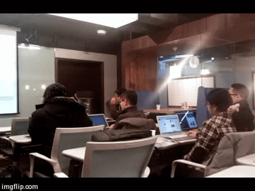

Babelpish.github.io

내 바벨피쉬

Welcome to babel pish Pages.
사람의 언어, 기계의 언어 : 파이썬을 이용한 자연어처리
PART I (2014.10~2015.3)
2014년 10월 23일 - 2015년 3월 (변경 가능)
격주 목요일 저녁. 7시 30분~9시 30분/10시
장소: 토즈 강남2호점/강남점/타워점
[Book] Natural Language Processing with Python
| 회차 | 날짜 | 주제 | 발표자/페북 | 후기 |
|---|---|---|---|---|
| Part I-1 | 10/23/2014 | ch 1. Language Processing and Python | 김무성 | ㅎㄱ |
| Part I-2 | 11/ 6/2014 | [보강 A. 파이썬 기초] / [숙제] | 곽두환 | ㅎㄱ |
| Part I-3 | 11/20/2014 | ch2. Accessing Text Corpora and Lexical Resources | 조근영 | ㅎㄱ |
| Part I-4 | 12/ 4/2014 | 보강 B. 한국어 처리 - 1) KoNLPy,2) 은전한닢+mecab | 정재윤 | ㅎㄱa /ㅎㄱb |
| Part I-5 | 12/18/2014 | ch3. Processing Raw Text | 이병호 | ㅎㄱ |
| Part I-6 | 1/15/2015 | 보강 C. 오픈소스 검색엔진 - Elasticsearch | 김정주 | ㅎㄱ |
| Part I-7 | 1/29/2015 | ch4. Writing Structured Programs | 유광현 | ㅎㄱ |
| Part I-8 | 2/12/2015 | ch5. Categorizing and Tagging Words | 송영숙 | ㅎㄱ |